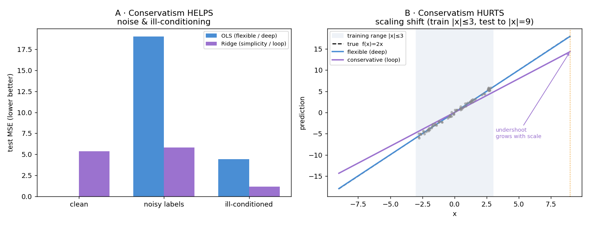

A 1-layer transformer, run in a loop with the prompt re-added every iteration and trained with a sliding loss window, learns in-context learning (linear/sparse regression, decision trees, small nets) about as well as a 12-layer transformer — at ~1/12 of the parameters (0.79M vs 9.48M) — and beats it on the harder, structured tasks. Each loop iteration behaves like one step of an iterative algorithm (gradient descent), so it trades parameters for iterations.
Feed the model input–output pairs and one query; it must predict the query’s label without any weight updates:
prompt P = ( x₁, f(x₁), x₂, f(x₂), … , x_k, f(x_k), x_test ) goal predict f(x_test) measured by squared error
A fresh function f is drawn per prompt (e.g. random linear f(x)=wᵀx), so the model can’t
memorize f — it must learn a learning algorithm that reads the pairs and fits on the fly.
A standard transformer must solve this in one forward pass — essentially approximating the closed-form
least-squares answer w = (XᵀX)⁻¹Xᵀy. The inverse is the expensive part: it’s an
elimination procedure with global coupling, so representing it needs many layers/heads (that’s why the
standard model wants to be deep). Attention naturally does matrix multiplication (weighted sums), but not
inversion.
Gradient descent reaches the same w using only matrix multiplies, applied repeatedly:
w_{t+1} = w_t − η · Xᵀ(X w_t − y) ← one cheap step, over and over
The callout above is the slogan; here is the machinery, because it turns out to be the cleanest possible model of “looped block replaces one-shot linear algebra” — clean enough to reason about with a theorem instead of a probe. We use the version the Muon optimizer runs on each gradient matrix.
Muon takes a gradient/momentum matrix G and wants the nearest semi-orthogonal matrix to it.
If you did a real SVD, G = U Σ Vᵀ, that nearest orthogonal matrix is Q = U Vᵀ — same
singular vectors, every singular value replaced by 1. Call it the polar factor. Computing
U, Σ, V is the expensive one-shot op (~n³, GPU-unfriendly, awkward gradients). Newton–Schulz produces
Q using only matrix multiplies, and never forms U, Σ, or
V.
U Vᵀ.Take an odd polynomial — the classic choice is p(x) = 1.5x − 0.5x³ — and apply it to a matrix
in this exact shape:
X_next = 1.5·X − 0.5·X Xᵀ X
If X = U Σ Vᵀ, this expression equals U · p(Σ) · Vᵀ. Two lines show why:
X Xᵀ X = (UΣVᵀ)(VΣUᵀ)(UΣVᵀ) = U Σ³ Vᵀ, so
1.5·UΣVᵀ − 0.5·UΣ³Vᵀ = U(1.5Σ − 0.5Σ³)Vᵀ. The U and V pass straight through, untouched; the
polynomial acts only on the singular values, one at a time, as the scalar map σ → 1.5σ − 0.5σ³.
Iterating the matrix recurrence is just iterating that scalar map on every singular value in parallel, with
the singular vectors held fixed.
Look at the scalar map f(σ) = 1.5σ − 0.5σ³ on the interval (0, 1]:
f(σ) = σ gives σ(1 − σ²) = 0 → σ = 0 or
σ = 1.f(1) = 1 (a value already at 1 stays), and f′(1) = 1.5(1 − σ²) = 0 at
σ = 1 → quadratic convergence into 1.σ in (0, 1), f pushes it upward toward 1.So you first scale G so all singular values are ≤ 1 (cheaply, divide by the Frobenius norm as an
upper bound on the spectral norm), then iterate. Every value climbs to 1; every vector is preserved. Result ≈
U·I·Vᵀ = U Vᵀ in a handful of matmuls.
start σ = 0.2, iterate f(σ) = 1.5σ − 0.5σ³ x0 = 0.200 x1 = 0.296 x2 = 0.431 x3 = 0.607 x4 = 0.798 x5 = 0.943 x6 = 0.995 x7 = 0.99995 ← a value already at 1 would have stayed at 1 the whole time
The small value takes ~7 steps to lift — the classic polynomial is slow near zero. That is exactly the setup for Muon’s twist.
Muon does not use 1.5x − 0.5x³. Keller Jordan retuned the coefficients of a quintic
p(x) = a·x + b·x³ + c·x⁵ (roughly a = 3.4445, b = −4.7750, c = 2.0315) so it lifts small
singular values aggressively and drives the whole spectrum into a band near 1 in about 5 iterations.
It deliberately overshoots — it does not converge exactly to 1 — because an optimizer step only needs
approximate orthogonalization, so speed is the right trade. Fixed count (5), same coefficients every step,
all matmuls: perfectly GPU-friendly.
T = 5 just like picking
T at inference. But the frontier of NS (per-step-tuned coefficients, e.g. the Polar Express
line) uses a different polynomial at each iteration to converge in fewer steps — because early steps have a
different job (lift the tiny singular values) than late steps (polish everything to 1). That is precisely the
per-step adapter / boosting framing: iteration t gets its own coefficients because it fits the
residual of steps 1…t−1 — and here you can derive the optimal per-step polynomial by
minimizing worst-case distance-to-1 over the remaining spectrum. A theorem where the loop-transformer story usually
only has a probe.| Variant | Recurrence | Inference behaviour |
|---|---|---|
| Weight-tying | Y_{t+1} = M(Y_t) | prompt’s influence fades → drifts to a random fixed point → diverges past trained iterations |
| Input injection (default) | Y_{t+1} = M(Y_t + P) | prompt re-added every step → stable fixed point that holds far beyond training |
tune θ to minimize, averaged over
• random prompts P → learn the algorithm, not one function
• prefix lengths i = 0 … k → predict well at every context size
• loop iterations t = b−T … b → reach a good answer AND hold it (stable fixed point)
the squared error between ŷ and the true label f(x_{i+1}).
y₁…y_k are inside the
prompt → inputs the loop uses every step. The query label f(x_{i+1}) is used only in the
training loss, to produce the one θ update — the model never sees it as input, and at inference it doesn’t
exist.Y_{t+1}=M(Y_t+P) depends only on the current state → memoryless, fixed rule, converges to a fixed
point Y*=M(Y*+P). Precisely: a deterministic dynamical system / Deep-Equilibrium model — which
is also what gradient descent is. The stochastic cousin (random transitions) is diffusion/MDM from the
other post.The loop reaches a stable fixed point even beyond its trained iterations — but only for the input distribution it trained on. It has an error floor and does not learn the truly universal algorithm that a real solver (least squares) applies to any inputs. This limitation hits the deep model too — both are distribution-specific; they just fail differently.
Fewer parameters give the loop a bias toward simpler, smaller solutions — like mild regularization. The same bias helps on some shifts and hurts on others, depending on what the shift asks for:

f(x)=2x on |x|≤3, test to |x|=9: the shrunk “conservative”
slope undershoots, and the miss grows with input scale (1.2 → 2.4 → 3.7). Reproduce with
conservatism_extrapolation_demo.py.XᵀX has a near-zero value there, and the inverse divides by it →
weights blow up. Ridge adds a little before dividing → stabilizes.